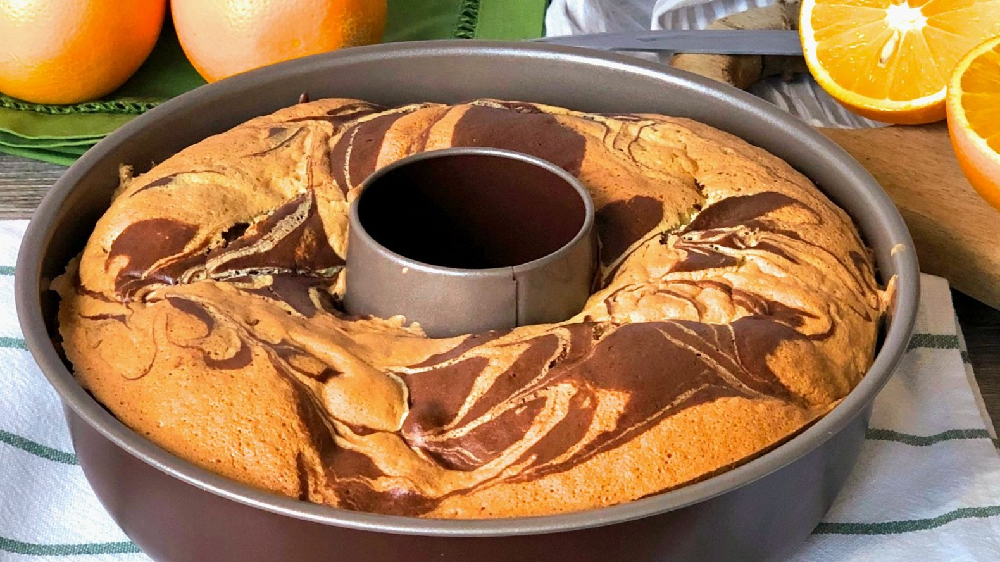

Pasos a seguir:
- Precalienta el horno a una temperatura muy suave.
- Pon en un cuenco la mantequilla y el azúcar. Mezcla bien y añade las yemas, la leche y al final la harina mezclada con la levadura.
- Cuando esté todo bien mezclado, bate las claras en otro cuenco hasta que lleguen a punto de nieve. Incorpora las claras a la masa sin mover demasiado.
- Separa la masa en dos mitades y añade a una de ellas el cacao.
- Echa las dos masas alternadass en un molde, y mételo en el horno por una hora, más o menos.
